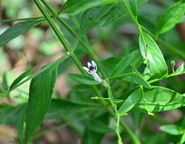

Basonym of Drug
Kalmegha
Main Synonym
- Bhunimba
- Yavakharaphala
- Yavatikta
Regional Name
- Bengali: Kalmegh
- Gujarati: Lilu Kariyatu
- Hindi: Kalmegh
- Marathi: Kairiath
- Tamil: Nillavembu
- Telugu: Nelavemu
- English: The Creat
Botanical Name
Andrographis paniculata Wall ex Nees
Family
Acanthaceae
External Morphology
An annual erect herb
Useful Parts
Important Phytoconstituent
- Andrographolides
- Oroxylin
- Neoandrographolide
- Paniculides
- Andrographidine
Rasa Panchak
- Rasa: Tikta
- Guna: Laghu, Ruksha
- Virya: Shita
- Vipaka: Katu
Action
Therapeutic Indication
- Deepen (Appetizer)
- Jwarahara (Anti-pyretic)
- Krimighna (Anti-helminthic)
- Sothahara (Anti-inflammatory)
- Raktapittahara (Useful in bleeding disorders)
- Kusthaghna (Treat skin diseases)
- Kamlahara (Treat jaundice)
Therapeutic Uses
- Chardi: Paste of whole plant with honey and rock sugar is given in vomiting.
- Jwara: Hot infusion or decoction is beneficial in fever.
- Yakrutvikara: Decoction with Sarapunkha powder is given in hepatic disorders.
Dose
- Powder: 1-3 gm
- Decoction: 20-40 ml
- Juice: 5-10 ml
Formulations
- Bhunimbadi Kadha
- Bhunimbadi Churna
Adverse Effect
Not Known
Remedial Measure
Not required